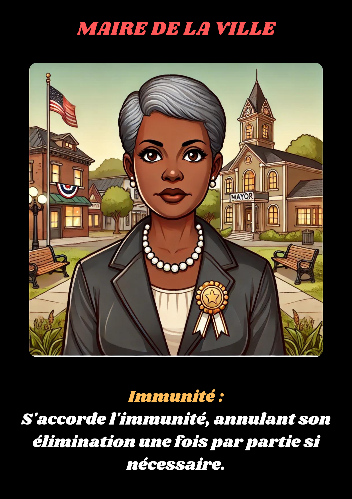

Le Maire est l’autorité officielle et la figure de stabilité à Val-Lumière, mais la disparition d'Emmanuel menace de tout déstabiliser. Ses décisions peuvent changer le cours de la soirée. Son pouvoir lui permet de s’accorder une immunité pour un tour, garantissant ainsi qu’il ne sera pas éliminé, mais au risque de susciter des soupçons. 